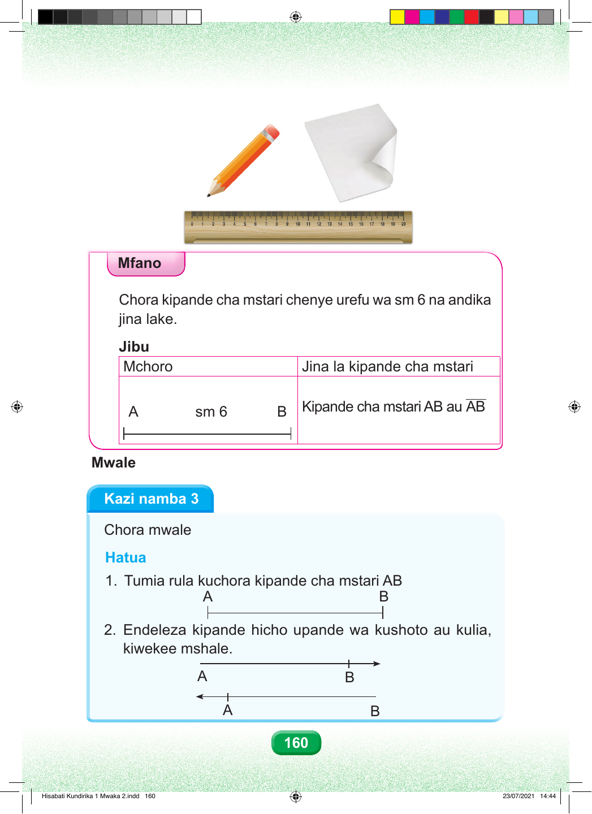

Mfano Chora kipande cha mstari chenye urefu wa sm 6 na andika jina lake. Jibu Mchoro Jina la kipande cha mstari A sm 6 B Kipande cha mstari AB au AB Mwale Kazi namba 3 Chora mwale Hatua 1. Tumia rula kuchora kipande cha mstari AB A B 2. Endeleza kipande hicho upande wa kushoto au kulia, kiwekee mshale. A B A B 160 Hisabati Kundirika 1 Mwaka 2.indd 160 23/07/2021 14:44